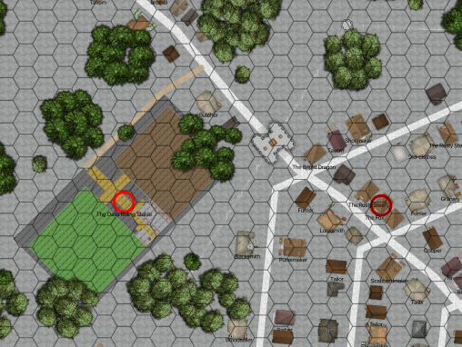
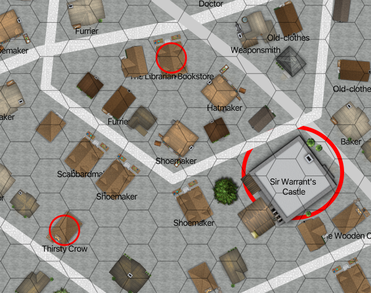

City of Eagles¶

City of Eagles, Earldom of Hillshire¶
Scale: Hex = 10m (30’)
The City of Eagles is built in a style that predates the Kingdom of the East. It is strictly hexagonal. The outer wall is precisely aligned with true North. The inner streets are at an odd angle from the walls, and there is considerable debate on what the meaning of the offset from the walls might have been. The idea of the magnetic north deviating from true north is known, but the motion of the magnetic north is not an idea the mages embrace.
The city has always been a crossroad. This was part of a poorly-known earlier kingdom that is sometimes called the Magelands. The city was abandoned, and after a few centuries it was occupied by Outlanders, who did little to maintain the roads or buildings. If a house collapsed, they used the timbers to build lean-tos against the walls or supports that remained. The Outlanders tended to live in the higher mountains in summer, and used Eagles as a winter camp.
The main roads outside the walls of the City of Eagles are infested with bandits. A few are highwaymen desperate for money and willing to engage in violence. The rest, however, is the the Bandit army. There are four principle roads.
The northwest road leads to a pass in the mountainous Outlands, and eventually, the Western Empire.
This road is mostly safe until the border with the Outlands. The Outlanders are suspicious of caravans, and generally avoid them. While the long trip through the Outlands is often relatively safe, some of the Outland throngs can be dangerous. The dangers seem random to someone who refuses to understand the politics of the Outlanders.
The southwest road leads out of the hills to the river separating Hillshire from the marshlands to the south and the kingdom of Mossing. This road is not heavily traveled, which seems to make the bandits on this road more desperate and dangerous.
While the marshes keep the two kingdoms separated peacefully, they are inhabited by creatures from outside this realm. At some point, the veil between worlds was opened, and monstrous creatures took up residence there. See Dark Realm of Cold and Mist for some guidance. Since few folks from the Kingdom of the East venture south on this road, opinions in these creatures vary.
The eastern road turns north, eventually heading toward Westmarch, as well as the Royal Domain. This is heavily traveled, and somewhat safer than other roads. Within a day or two of the Westmarch border, the banditry is limited to a few desperately poor people who have turned to robbery.
The southeast road picks a careful, but winding path through the hills toward City of White Water.
In the past, this had been relatively safe. In the last few years, banditry began an upsurge. It’s not perfectly clear if depredations started to increase before or after the assassination of the king. Is the banditry one cause of the increase in acrimony among the Earls, or is it a consequence of the earls fighting each other? The Great Priest of the Cult of the Jackal, Xorn, thinks he can alter the balance of power in the kingdom.
Locations Within the City¶
A number of locations are settings for the campaign scenarios.
The first scenario requires the GM and the players to map out a room the players tend to congregate in. See Suggested Player Characters for more details in the characters’ preferred hangout.
There are other locations which part of specific scenarios. Each of these is covered in separate sections.
Here’s a map of the NW corner of City of Eagles, showing the Fox’s Tail and The Oaks.

NW Gate of City of Eagles¶
Scale: Hex = 10m (30’)
Here’s a map of the center of City of Eagles, showing Sir Warrant’s Castle, the Library, and the Thirsty Crow

Center of City of Eagles¶
Scale: Hex = 10m (30’)